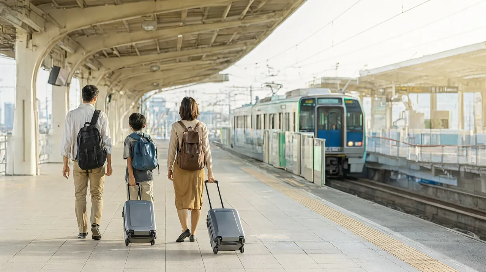

하네다·나리타에서 도쿄 시내까지
공항별 전철·버스 소요시간, 요금, 막차와 어린이 요금 비교

도쿄는 공항이 두 곳입니다. 하네다는 시내까지 15~50분이고, 나리타는 시내까지 한 시간 이상 걸립니다. 기준일은 2026-10-22이고, 환율은 100엔=837.81원(2026-10-21)이며 원화는 모두 약입니다. 어린이는 만 6~11세 기준이고, 6세 미만 유아의 무료 규정은 수단마다 다르니 아래 어린이 요금 표를 보세요. 도시 전체 정보는 도쿄 여행 가이드에 있습니다.
선택지 비교
하네다공항
| 수단 | 소요시간 | 요금 (성인 편도 / 어린이) | 막차 | 추천 대상 |
|---|---|---|---|---|
| 게이큐 공항선 + JR 야마노테선 | 신주쿠까지 약 41분 | 590엔(약 4,900원) / 어린이는 절반 안팎 (정확한 금액 확인 필요) | 하네다 제3터미널 출발 00:08 (시나가와에서 JR 환승 막차 00:20) | 신주쿠·시부야 방면, 가장 저렴하게 |
| 게이큐 공항선 | 시나가와까지 약 15~20분 | 330엔(약 2,800원) / 어린이는 절반 안팎 (확인 필요) | 00:08 | 시나가와·도쿄역 방면, 신칸센 환승 |
| 도쿄 모노레일 | 하마마쓰초까지 약 13~17분 | 제3터미널 기준 520엔(IC 519엔) / 어린이 260엔(IC 259엔) | 00:10 (평일 제3터미널 출발) | 하마마쓰초·JR 환승 방면 |
| 공항 리무진 버스 | 신주쿠까지 약 55분 (교통 상황에 따라 변동) | 1,400엔(약 1.2만원) / 어린이 700엔 (리무진버스 공식) | 23:40 | 짐이 많거나 환승이 부담스러운 가족 |
(소요시간 하네다공항 공식 / 게이큐·버스 요금과 막차 airport.tokyo, 2026-10-01 확인 표기 / 모노레일 요금 도쿄 모노레일 공식 요금표 / 하네다 리무진 요금은 리무진버스 공식 노선 페이지 2026-10-22 확인)
나리타공항
| 수단 | 소요시간 | 요금 (성인 편도 / 어린이) | 막차 (나리타 출발) | 추천 대상 |
|---|---|---|---|---|
| 나리타 익스프레스(N'EX) 도쿄역행 | 약 55~75분 | 3,140엔(약 2.6만원) / 1,570엔(성인의 절반, JR 동일본 공식) | 21:44 | 환승 없이 도쿄역 방면 |
| N'EX 신주쿠행 | 약 85~100분 | 3,330엔(약 2.8만원) / 1,665엔(절반 계산) | 21:44 | 신주쿠·시부야 방면 |
| 게이세이 스카이라이너 | 닛포리 최단 약 36분, 우에노 약 41분 | 현장 2,580엔(약 2.2만원), 외국인 온라인 2,310엔 / 어린이 1,290엔(온라인 1,150엔) (케이세이 공식) | 23:00 | 우에노·아사쿠사 방면, 가장 빠르게 |
| 게이세이 액세스 특급 | 시나가와까지 약 95분 | 1,520엔(약 1.3만원) / 770엔 | 평일 20:34, 주말·휴일 22:08 | 가장 저렴, 시간 여유가 있을 때 |
| 공항버스 도쿄·나리타 | 도쿄역까지 약 65~68분 | 1,500엔(약 1.3만원) / 750엔 (심야·새벽 편은 성인 3,000엔, 어린이 1,500엔) | 확인 필요 (심야 편 있음) | 예산 우선 |
| 리무진 버스 | 시각표상 약 75~100분 | 도쿄역 3,100엔(약 2.6만원) / 1,550엔 | 20:45 (제1터미널 출발, 제2 20:40, 제3 20:35) | 호텔 가까이까지 가고 싶을 때 |
(N'EX 요금과 어린이 규정 JR 동일본 공식, 2026-03-14 갱신 / 스카이라이너·액세스 특급 케이세이 공식 요금표(액세스 특급 시나가와는 기존 1,630엔을 공식 1,520엔으로 정정), 막차는 NAVITIME와 airport.tokyo / 버스 NAVITIME 2026-09 게시 글에서 공식 사이트 인용 / 나리타 리무진 요금·막차·소요시간은 리무진버스 공식 시각표 2026-10-22 조회, 소요시간은 제1터미널 출발 기준 시각표 계산)
N'EX 외국인 방문자 전용 도쿄 왕복 티켓은 5,200엔(약 4.4만원)이고 14일간 유효합니다 (JR 동일본 공식).
추천
가족 3인 편도 합계 예시
| 수단 | 계산 | 합계 |
|---|---|---|
| 하네다 게이큐 + JR (신주쿠) | 590 x 2 + 295(어린이 절반 가정) | 약 1,475엔 (약 1.2만원) |
| 하네다 리무진 (신주쿠) | 1,400 x 2 + 700 | 3,500엔 (약 2.9만원) |
| 나리타 N'EX (도쿄역) | 3,140 x 2 + 1,570 | 7,850엔 (약 6.6만원) |
| 나리타 스카이라이너 (우에노) | 2,580 x 2 + 1,290 | 6,450엔 (약 5.4만원) |
| 나리타 공항버스 (도쿄역) | 1,500 x 2 + 750 | 3,750엔 (약 3.1만원) |
짐이 많은 가족
- 하네다: 리무진 버스를 먼저 고려하세요. 환승이 없고 짐을 직접 들고 계단을 오르내릴 일이 적습니다. 숙소가 신주쿠 버스 정류장이나 그 주변 호텔에 가깝다면 특히 편합니다. 정류장은 노선별로 다르니 예약 때 확인하세요. 대신 요금이 전철의 두 배 이상이고 시간이 교통 상황에 따라 변합니다.
- 나리타: N'EX가 가장 무난합니다. 지정석이라 앉을 자리가 보장되고 도쿄역까지 환승이 없습니다. 예산이 우선이면 공항버스(도쿄역행 약 65~68분)가 훨씬 쌉니다.
- 전철로 가는 경우 시나가와나 도쿄역 같은 큰 역에서 한 번만 갈아타도록 숙소 위치를 고르세요. 숙소 권역 비교는 도쿄 허브의 숙소 권역 표를 참고하세요.
늦게 도착하는 경우
- 하네다는 제3터미널 게이큐 막차가 00:08입니다. 입국 심사와 짐 찾는 시간을 감안하면 23시대 도착까지는 전철이 가능합니다 (작성자 판단).
- 나리타는 N'EX 21:44, 스카이라이너 23:00이 마지막입니다. 그 뒤에는 버스 심야 편(성인 3,000엔)이 있지만 요금이 두 배입니다. 늦은 도착이면 하네다 항공편을 먼저 찾는 것이 낫습니다.
주의
- 2026년 11월 7일(토) 전후에 N'EX는 신주쿠·오후나행이 운행되지 않고 도쿄역에서 출발·도착만 합니다. JR 동일본은 요코스카선·소부 쾌속선 터널 공사로 도쿄~시나가와 구간을 2026-11-07 하루 종일 운행 중단하며, 이틀 전인 금요일 저녁부터 일요일 아침까지 일부 열차가 영향을 받습니다. 이 구간을 지나는 일정이면 JR 동일본 공지를 다시 확인하세요 (JR 동일본 공식 공지). 공식 공지 기준 상세: 11월 6일(금)은 나리타 18:45~21:44 출발 N'EX 46~54호가 도쿄역까지만 운행하고, 11월 7일(토)은 도쿄역 기준 상하행 모두 신주쿠·오후나 구간이 중단되며, 11월 8일(일) 오전 하행 1~7호도 일부 구간이 중단되거나 신주쿠 출발로 바뀝니다. 2026-09-05·06 일정은 이미 지났습니다.
- N'EX는 도쿄역에서 열차가 갈라집니다. 신주쿠·시나가와행 칸의 행선지를 탑승 전에 확인하세요 (airport.tokyo). 위 공사 기간에는 해당 구간이 중단됩니다.
- 어린이 요금 규정 (JR 동일본 공식, N'EX): 6~11세는 성인의 절반, 1~5세 유아는 무료입니다. 단 유아가 자기 좌석을 차지하면 어린이 표가 필요하고, 성인 한 명당 유아 두 명까지 무료이며 세 명째부터 표가 필요합니다. N'EX 그린 차량의 어린이 요금은 성인과 같습니다.
- 공항버스 도쿄·나리타: 취학 전 아이는 성인 1명당 1명까지 무료이고, 좌석을 쓰면 750엔입니다 (NAVITIME). 도쿄 모노레일은 유아 2명까지 무료이고 12세라도 초등학생이면 어린이 요금입니다 (도쿄 모노레일 공식).
- 12세라도 초등학교에 다니면 어린이 요금을 적용하는 곳이 많습니다. 리무진 버스 예약 안내에서도 같은 규정이 보입니다 (비공식 예약 페이지 표기).
- 심야 도착이면 노선 사이 환승 연결이 보장되지 않습니다. 마지막 열차는 선로 사정으로 바뀔 수 있으니 도착 전에 다시 확인하세요 (airport.tokyo).
- IC카드: 만 6~11세는 어린이 요금이 적용됩니다. 어린이용 Welcome Suica는 전용 발매기가 있는 역이 한정돼 있어 도쿄 허브의 교통 표를 참고하세요.
확인 필요 항목
- 하네다 게이큐 공항선의 정확한 어린이 요금 (게이큐 공식 요금표 페이지 404로 확인하지 못함)
- 도쿄 모노레일 주말·휴일 막차 (공식 시각표에서 평일 표만 읽음)
- 나리타 공항버스(도쿄·나리타)의 막차와 어린이 요금 (공식 사이트 접속 실패)
- 하네다 리무진 버스 막차 23:40의 공식 재확인 (이번에는 노선 페이지에서 요금만 확인)
공식 출처
- 하네다공항 전철 안내: https://tokyo-haneda.com/en/access/train/index.html
- airport.tokyo (하네다 신주쿠, 나리타 시나가와): https://airport.tokyo/en/transfer/haneda-to-shinjuku , https://airport.tokyo/en/transfer/narita-to-shinagawa/
- 나리타공항 출국 안내: https://www.narita-airport.jp/en/airportguide/inter-dep
- JR 동일본 N'EX 승차권: https://www.jreast.co.jp/en/multi/nex/tickets/
- JR 동일본 터널 공사 공지: https://www.jreast.co.jp/en/yokosuka-tunnel-koji
- 도쿄 모노레일 요금표와 승차권: https://www.tokyo-monorail.co.jp/english/guidance/train_info.html , https://www.tokyo-monorail.co.jp/english/tickets/type.html
- 리무진 버스: https://www.limousinebus.co.jp/en/
- 비공식 안내: NAVITIME 나리타 공항버스 가이드와 예약 페이지, Lunitravels 어린이 동반 안내